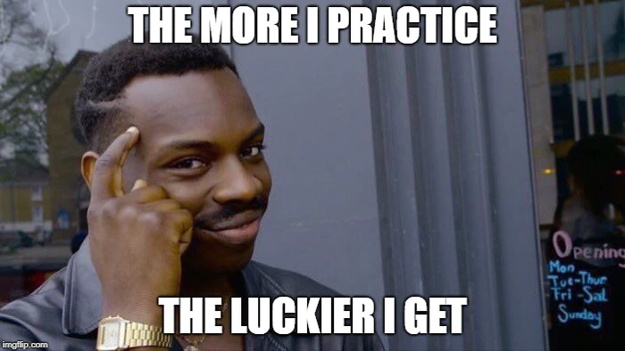

Getting started into programming can be very scary, and there are a lot of misconceptions out there that make people think that programming is a skill they could never learn, or that landing a job as a web developer is almost mission impossible. They couldn't be more wrong!
The software development industry, web development in particular is full of amazing stories of people with no tech background who switched to development and changed their life for great and they couldn’t be happier with the change.
Programming is a great skill to have, it will teach you to think differently, it will open you the doors to a lot of job opportunities even in these times where the job market is so hurt by the economic decline, and it will also give you an amazing talent to build your own projects and companies.
I'm a self-taught developer, I tried college a few times a few years ago, to never succeed there, I was always getting bored at the classrooms and it just wasn’t for me. However thanks to the amazing world of the internet I was able to learn all my skills and become a great software engineer. As a side note here, today I’m completing my degree at an online university, not because I needed it to get a job in tech, or because it was limiting my career in any way, but because it's a personal debt I want to pay off.
Going back to our topic here, let me present you my path to becoming a web developer, in particular, a front end developer (if you don't know what this is, stay with me, I’ll explain it all), and my path to landing your first job in tech.
What is web developer
Congrats! You decided to stay here, that means that you took the first step into becoming a web developer, but what exactly does it mean to be a web developer?
I don't want to be so obvious here, but a web developer is he/she who utilizes a programming language to build web pages and applications. There are 3 types of web developers out there, front-end developers, back-end developers, and full-stack developers.
Front-end developer
A front-end developer is responsible for building what you see and interact with on a web page or application. It is the specialist who transforms a design, an image, or an idea into the code that allows web browsers to display the website. We shouldn't underestimate the work front-end developers do, as a matter of fact as web applications are becoming increasingly more sophisticated, the job of the front-end developer has been mutating from simply working on implementing the design to actually building full working applications which run within our browsers. This is for me a key role where you can combine tech, development, and design to build amazing experiences, and it is my recommendation for those getting started. Starting in front-end would be an easier road than if you start in back-end.
Back-end developer
This role is responsible for designing and building the systems that will support our front-end application. For example, when you click the “save” button, the back-end developer will write with code the algorithms and logic responsible for receiving your request, process it, store it in a database (if required) and send back the results so that the front-end can let you know it all went good.
Full-stack developer
It is a new term for an old role, the full-stack developer is someone who can work both, front-end and back-end tasks.
Steps
Let's now jump into the steps that you need to become a front-end developer and land your first job.
All the steps I’m providing here and my recommendations are what I gather from years in the industry as a developer myself, working as a tech lead for a big multinational company where I interviewed many many candidates and now in my role as a senior software engineer and content creator.
-
Learn HTML & CSS
-
Practice

-
Learn JavaScript and change the world
-
Make a portfolio site
-
Build a killer resume and start connecting
-
Learn a framework
-
Interview prep!

Final words
The world of tech is constantly changing, and as developers working at the edge of technology, we need to do as well. Keeping yourself informed of the latest frameworks, techniques, programming languages, etc is crucial to remain effective in the workplace.
You just started a life long journey, which provides amazing opportunities, enjoy it!
Thanks so much for reading!
Comments
Name :
.............
Name :
.............